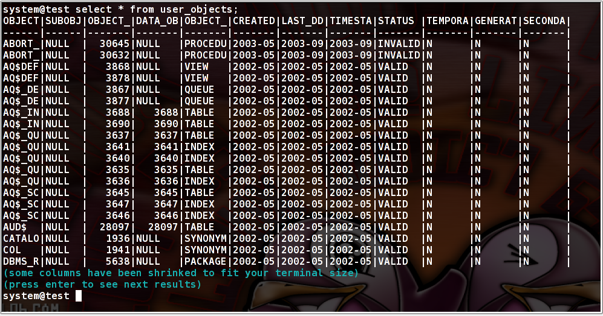
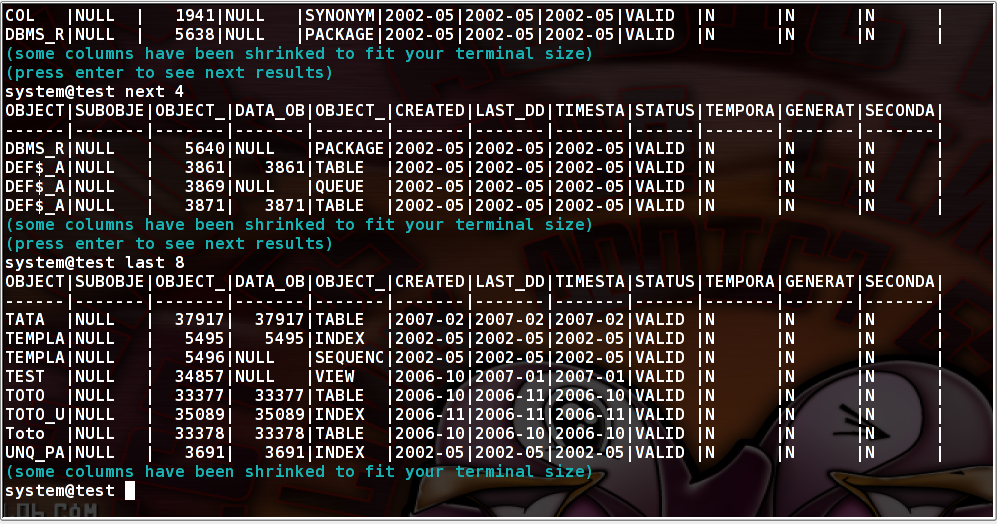
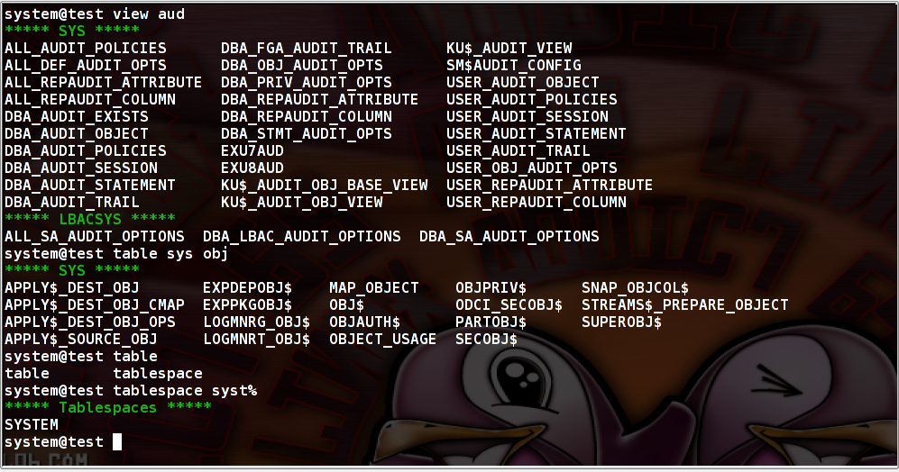
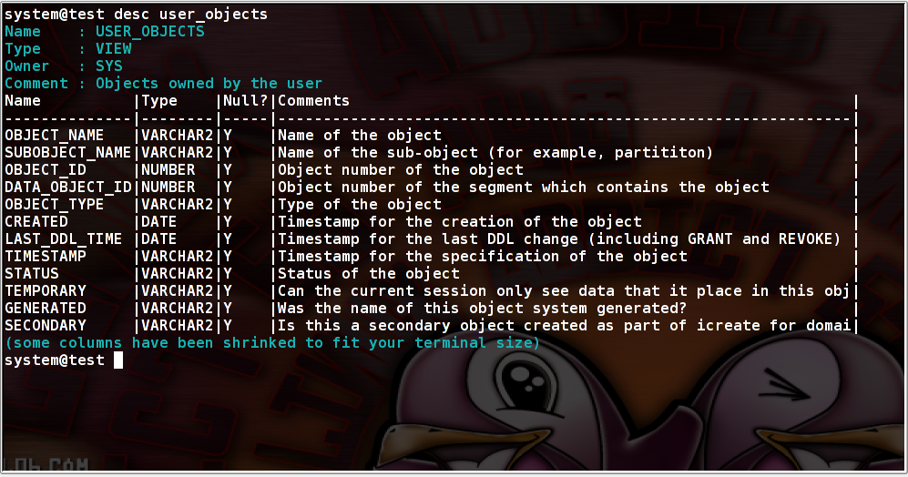
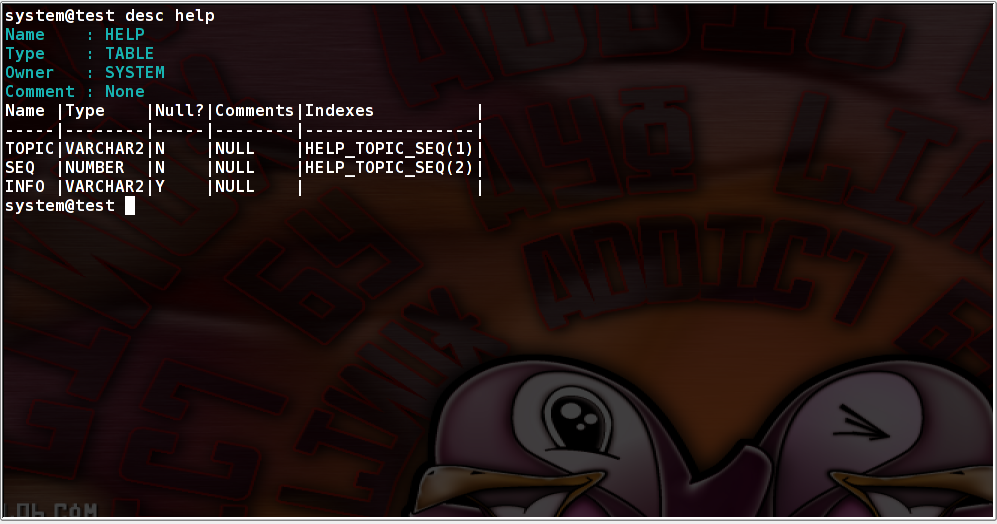

PySQL screenshots
Simple SQL statements

Notice that some columns have been truncated to fit screen size and that screen does not
scroll endlessly. It stops after a defined number of rows to let users read records.
Just press "enter" to see next resultset part.

If you want to jump to next "n" or last "n" records, just type it !
Objects searching

With commands view table, index, package, procedure, segment, tablespace you can search for objects in any schema
or in one defined schema.
The % caracter can be used as standard SQL wildcard. If not given, pysql put a % before and after your search keyword.
Notice that when typing table and "tab" key, pysql complete with available commands : table and tablespace.
Objects describing

Pysql desc command display object and columns comments.

If table's columns are indexed it is also display with the column position in the index !

Graphical functions
Background request
Explain plan
Session management
Table comparison
structure, data
Objects editing
SQL library
CSV output
PySQL Parameters
Misc
count, time, ddl, watch, shell escape, completion, history, oracle parameter search,
Pysql home page
Sebastien Renard